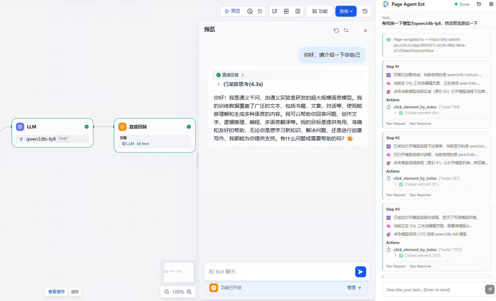

浏览器内 GUI Agent 全景：Page Agent、browser-use、Stagehand、Skyvern 技术路线拆解
2026 年，让 AI 操作网页界面（GUI Agent）成了整个 Agent 赛道最拥挤的战场。阿里巴巴开源的 page-agent（GitHub 20k+ stars，MIT 许可）抛出一个大胆的思路：不从外部控制浏览器，而是让 AI Agent 直接"住进"网页里，一行 JavaScript 就能让任意 Web 应用听懂自然语言。
这个思路和主流的 Playwright、Puppeteer、browser-use 截然不同。它引出一个更大的问题：当 AI 要操作网页时，到底应该站在哪里、用什么方式"看"页面、又如何执行动作？
围绕这三个问题，业界已经分化出至少五条技术路线。本文把它们摆到一起，拆解各自的架构取舍与适用边界，帮你在自己的场景里选对工具。
一、先厘清一个核心问题：Agent 站在哪里？
所有浏览器 GUI Agent 的第一个分野，是运行位置。
传统自动化工具（Selenium、Playwright、Puppeteer）以及新一代的 browser-use，本质上都是从外部控制浏览器：你的代码跑在独立进程里，通过 Chrome DevTools Protocol（CDP）加 WebSocket 向浏览器发指令，再等待回执。用一个形象的比喻——浏览器是木偶，你的代码在外面拉线。
这种"外部控制"模式有它的优势（跨浏览器、可批量、能跑在服务器上），但也带来固有成本：需要独立进程、需要驱动、需要管理浏览器生命周期，而且脱离了用户真实的登录态和会话环境。
阿里 Page Agent 给出了第二种答案：Agent 就活在网页内部。它是纯页内 JavaScript，直接读写当前页面的实时 DOM，天然继承用户的登录态与权限，不需要任何外部进程或驱动。
理解了这个"站位差异"，后面所有路线的分化就有了主线。
二、五条技术路线全景拆解
路线一：外部 CDP 驱动（Playwright / Puppeteer）
这是浏览器自动化的经典底座。
- Playwright（微软）：2026 年已成为大多数新项目的默认选择，原生跨浏览器（含 Safari/WebKit）、内置自动等待、完整测试运行器，还通过 MCP 提供官方 AI Agent 支持。
- Puppeteer（Google）：更轻量，偏 Chromium/Edge、CDP 导向的直接控制，适合已经以 Chrome 为中心的技术栈。
它们的定位是通用自动化与测试。对 AI Agent 来说，它们更多是"底层执行器"——上层的 Agent 框架往往在它们之上再包一层。纯用它们做 Agent，需要自己处理"如何把页面喂给 LLM、如何解析 LLM 的动作"这些活。
路线二：Agent 优先的结构化库（browser-use / Stagehand）
这一派在 CDP 底座之上，专门为 LLM Agent 做了封装。
- browser-use（Python）：Agent 优先设计。你给一个自然语言目标，系统进入"观察页面 → 决定动作 → 执行 → 重新评估"的推理循环。读取 DOM 和无障碍树（accessibility tree），对结构化元素操作。它是增长最快的开源 Agent 项目之一，拿到过 1700 万美元种子轮。
- Stagehand（Browserbase）：JS SDK，架在 Playwright 之上。它的哲学是"多粒度控制"——提供
act（执行动作）、extract（提取数据）、observe（观察可能动作）三个原子原语，既能让 Agent 自主决策，也能在需要时穿插传统 Playwright 代码。约 22k stars，周下载 70 万+。
这一派的共同点：以 DOM/无障碍树为主要感知方式，追求确定性和可读性，介于"脆弱的传统脚本"和"不可控的全自主 Agent"之间。
路线三：视觉 / 计算机使用（Skyvern / OpenAI Operator）
这一派放弃了对 DOM 的依赖，转而"像人一样看屏幕"。
- Skyvern：视觉优先。结合截图和 DOM 解析来理解页面，尤其擅长处理那些 HTML 是一堆 React 渲染"垃圾"、raw HTML 难以解析的重度动态界面。布局变化时工作流不易断。
- OpenAI Operator（CUA 模型）：2025 年 1 月发布，由 Computer-Using Agent 驱动，结合 GPT-4o 的视觉能力与强化学习，解读截图并操作 GUI 上的按钮、菜单、输入框，就像人做的一样。2026 年演进为 ChatGPT Agent，整合了 Operator 与 deep research，用自己的虚拟计算机端到端完成任务。
视觉派的取舍很清晰：通用性换性能。视觉方式几乎能处理任何界面（包括 Canvas、视频这些 DOM 读不到的内容），但速度慢、成本高，需要滚动整页截图，还容易在"这个按钮现在到底能不能点"这类细微状态变化上翻车。
路线四：AI 优先的紧凑 CLI（Vercel agent-browser）
Vercel Labs 的 agent-browser 代表了一个新思路：为 AI 的上下文窗口而设计。
它是 100% 原生 Rust 的 CLI，核心创新在于把每个页面蒸馏成紧凑的无障碍树快照，给每个可交互元素分配一个短引用 token（如 @e3、@e7）。Agent 不再去解析原始 HTML、和脆弱的 CSS 选择器搏斗，而是直接引用这些 token 操作。官方称这种方式相比 JSON 或完整 DOM 能节省高达 93% 的上下文窗口。
它的定位不是给人写测试脚本，而是给 AI"省 token、省钱、省延迟"。
路线五：页内轻量嵌入（阿里 Page Agent）← 本文主角
Page Agent 走的是最独特的第五条路。
它的核心技术叫 DOM 脱水（Dehydration）：运行在网页内部，把复杂的实时 DOM 树压缩成一个轻量级的 FlatDomTree 纯文本映射，去除冗余信息，给 LLM 一张干净的"文本地图"。LLM 推理出动作后，Page Agent 派发原生浏览器事件（click、input、scroll）执行。
关键特征：
- 纯文本，不用截图：因此不需要多模态 LLM，也不需要特殊权限，成本低
- 零基础设施：无需浏览器扩展、无需 Python、无需无头浏览器
- Bring your own LLM：支持 Qwen、OpenAI、OpenRouter、本地 Ollama
- 一行集成：
<script>标签或npm install page-agent
一个最小示例：
import { PageAgent } from 'page-agent'
const agent = new PageAgent({
model: 'qwen3.5-plus',
baseURL: 'https://dashscope.aliyuncs.com/compatible-mode/v1',
apiKey: 'YOUR_API_KEY',
language: 'zh-CN',
})
await agent.execute('点击登录按钮，然后把用户名填成 John')
Page Agent 还提供了可选的 Chrome 扩展，可以把页内 Agent 的能力扩展到多标签页、甚至嵌入到其他 Web 应用中。下图是 Page Agent 浏览器插件在 Dify 平台里的实际应用 demo——用自然语言直接驱动 Dify 的界面操作：

值得一提的是，Page Agent 在 README 中明确致谢了 browser-use——它的 DOM 处理组件和 prompt 派生自 browser-use（同为 MIT）。可以说 Page Agent 是把 browser-use 的 DOM 理解能力"搬进了浏览器内部"。
三、五条路线横向对比
| 方案 | 运行位置 | 感知方式 | 语言/形态 | 核心定位 | 许可 |
|---|---|---|---|---|---|
| Playwright / Puppeteer | 外部进程 | DOM / CDP | JS/Python 库 | 通用自动化 + 测试底座 | Apache/BSD |
| browser-use | 外部进程 | DOM + 无障碍树 | Python 库 | Agent 优先自动化 | MIT |
| Stagehand | 外部进程 | DOM + 可选视觉 | JS SDK（架于 Playwright） | 原子操作 + Agent 混合 | MIT |
| Skyvern / Operator | 外部进程 / 云 | 截图视觉为主 | Python / 托管服务 | 抗布局变化的视觉 Agent | AGPL / 闭源 |
| Vercel agent-browser | 外部进程 | 无障碍树 + ref token | Rust CLI | 为 AI 省 token | 开源 |
| 阿里 Page Agent | 浏览器内（客户端） | 文本 DOM（FlatDomTree） | 页内 TypeScript | Web 应用嵌入副驾 | MIT |
三个关键维度的本质分野
站位（外部 vs 页内）：这是 Page Agent 与所有其他方案最根本的区别。页内运行意味着零基建、天然继承会话态，但也意味着它只能操作"当前这个网页"。
感知（DOM 文本 vs 视觉截图）：
- DOM 派（Page Agent、browser-use、Stagehand、agent-browser）：快、精确、便宜，但在 Canvas、视频、shadow DOM 重的界面上会失灵。
- 视觉派（Skyvern、Operator）：通用，但慢、贵。
- 2026 年的生产栈其实已经收敛到 hybrid（混合）：DOM 为主、视觉兜底。
执行（拉线 vs 原生事件）：外部方案通过 CDP 发指令；Page Agent 直接在页内派发原生 DOM 事件，更贴近真实用户行为。
四、benchmark 的真相：实验室高分 ≠ 真实可用
选型时有一个必须警惕的陷阱：基准测试分数具有极强的误导性。
业界最常用的 WebVoyager 基准只覆盖 643 个任务、15 个网站，且偏读取类任务，真实摩擦还没显现。各家 Agent 在上面刷到 90%+ 的成功率并不稀奇。
但一旦放到更真实、更动态的环境（如 Online-Mind2Web），成功率会大幅崩塌——多数 Agent 退回到接近早期基线的水平，只有 OpenAI Operator 在挑战性的真实环境中达到约 61%。
这个落差对所有 GUI Agent 都成立，也包括 Page Agent。选型时不要只看厂商宣传的 benchmark 数字，一定要在你自己的目标网页上实测。
五、选型指南：什么场景选什么
选 Page Agent
- 你想给自己的 SaaS / 后台 / B2B 工具加 AI 副驾：几行代码，无需重写后端
- 智能表单填充：把 ERP/CRM 里 20 次点击的流程变成一句话
- 无障碍访问：让 Web 应用支持自然语言、语音、读屏
- 希望零服务端、零运维：一切跑在用户浏览器里
不适合：服务端批量自动化、爬虫、E2E 测试、Canvas 类图形界面。
选 browser-use / Stagehand
- 你要构建自主 Agent 做多步网页任务（如自动订票、跨站数据聚合）
- 需要在服务器端批量运行
- Stagehand 尤其适合：想要"Agent 自主 + 传统脚本可控"两者兼得
选 Skyvern / Operator
- 目标网页是重度动态渲染、DOM 一团糟
- 布局频繁变化，希望工作流不因改版而断
- 能接受更高的延迟和成本
选 Vercel agent-browser
- 你在构建 CLI / 终端型 Agent，上下文窗口和 token 成本敏感
- 需要跨多页面、可脚本化的自动化
选 Playwright / Puppeteer
- 纯测试、爬虫、确定性自动化（不一定需要 LLM）
- 作为上层 Agent 框架的执行底座
六、行业意义：GUI Agent 的"三条路"之争
把这五条路线抽象一下，其实是三种哲学的竞争：
- 外部控制派（Playwright/Puppeteer/browser-use/Stagehand/agent-browser）：Agent 在外，浏览器是被操控对象。成熟、可批量、可跑服务端。
- 视觉识别派（Skyvern/Operator）：Agent 像人一样看屏幕。通用性最强，成本最高。
- 页内嵌入派（Page Agent）：Agent 住进页面。门槛最低、最贴近终端用户，但边界也最窄。
Page Agent 的真正价值不在于技术多么颠覆，而在于它把"给每个 Web 应用装 AI 副驾"的成本降到了几乎为零。MIT 许可 + 一行集成，让中小团队和独立开发者也能给产品加上自然语言交互。
这可能推动一个新趋势：AI 原生 Web 应用。未来的 Web 应用或许默认就带一个"页内副驾"，用户不再需要学习复杂的界面，只要说出意图即可。而 GUI Agent 的三条路线大概率会长期共存、互相融合——服务端自动化用外部派，终端用户副驾用页内派，复杂动态界面用视觉派兜底。
小结
浏览器 GUI Agent 没有"银弹"，只有"合适"。
- 想给 自己的 Web 应用加副驾 → Page Agent（零基建、一行集成、MIT）
- 想做 服务端自主 Agent → browser-use / Stagehand
- 面对 动态渲染的复杂界面 → Skyvern / Operator（视觉兜底）
- 追求 省 token 的 CLI Agent → Vercel agent-browser
- 纯 测试与确定性自动化 → Playwright / Puppeteer
阿里 Page Agent 最大的贡献，是证明了"页内轻量嵌入"这条路走得通，并把门槛降到了任何前端开发者都能上手的程度。当给网页装 AI 变得像加一个 <script> 一样简单时，真正的想象空间才刚刚打开。
免责声明：本文为技术分析文章，不构成任何投资建议。文中提及的开源项目、公司和产品不代表推荐或背书。技术选型请以实际测试数据为准，各项目的 star 数、下载量等数据会随时间变化。
参考来源
- alibaba/page-agent - GitHub
- Page Agent README - GitHub
- Alibaba's Page Agent Offers In-Page AI Automation for Web Apps - TechGig
- Alibaba Open Sources Page Agent - AIbase
- How to Build an AI Support Agent with Alibaba Page Agent - Webfuse
- Browser-use vs Stagehand vs Skyvern - Massive
- Stagehand - Browserbase
- browserbase/stagehand - GitHub
- Playwright vs Puppeteer: Which to choose in 2026 - Bug0
- Computer-Using Agent - OpenAI
- vercel-labs/agent-browser - GitHub
- Agent-Browser: AI-First Browser Automation - Medium
- How does a browser agent perceive a page (vision vs DOM) - Notte
- Compare AI Browser Agents - Skyvern
延伸阅读
- MCP vs A2A：AI Agent 协议深度对比 — Agent 之间如何通信与协作
- 企业 AI Agent 部署指南 2026 — 从 PoC 到生产的落地路径
- 从 LLM 到 Agent：对话已死，行动永生 — Agent 范式的底层逻辑
- 阿里 Qwen 开源变现 vs AWS — 阿里 AI 开源战略全景
推荐搭配装备
善其事，利其器。以下硬件能最大化你的数据分析体验👇
🔗 通过以上链接购买可支持本站持续运营 🙏